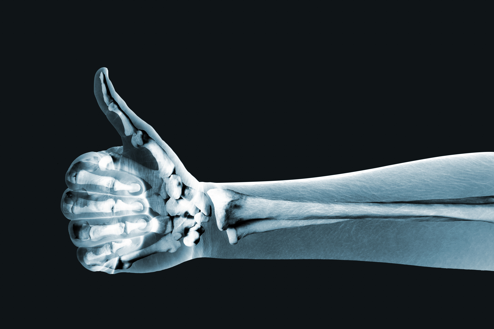

Technology Opportunities - X-ray benefits 
Medical Imaging:
It stands as a pillar in modern healthcare. It provides invaluable insights into the human body for both diagnosis and treatment planning. . Diagnosis – it is a flexible tool that is tasked to reveal a variety of conditions. Starting from fractures, from tumours and infections to more complex organ and tissue examinations. X-ray technology captures high-resolution images that allow medical professionals to detect and analyse abnormalities, leading to more precise diagnoses.
Dental Imaging:
Dental Imaging: X-ray technology is one of the most important diagnostic and treatment planning tools in dentistry. Because X-rays can penetrate deep into the tissues of the oral cavity, they can reveal dental issues that may otherwise not be seen during a clinical examination. X-rays are used to diagnose issues such as cavity, impacted tooth, and gum disease. They are also used to guide dentists in performing procedures such as root canals, extractions, and more. For instance, before performing root canals, dentists can take X-rays of the tooth’s internal structure. This allows them to see exactly where the infection or damage is located.
Veterinary Medicine:
Veterinary Medicine: the veterinary field, X-rays are one of the most important diagnostic tools for animals. They are used to identify fractures, joint issues, and many other issues in pets and cattle. X-rays provide veterinarians with a non-intrusive way to look at skeletal structures and internal organs. This is especially useful in emergencies or when animals are unable to vocalize their symptoms. When used correctly, X-rays improve the quality of life for animals by allowing for more precise diagnoses and better treatment plans.
Therapeutic Application:
Therapeutic Application: X-ray therapy is also referred to as radiation therapy. X-ray technology is widely used in oncology to treat cancer. X-rays target and destroy cancer cells by targeting the tumour site. X-rays destroy cancer cells by damaging the DNA of the cancer cells and preventing them from dividing and growing. This targeted approach reduces the impact of X-rays on surrounding healthy tissues. X-ray therapy can be used as a primary treatment method or in conjunction with surgery and chemotherapy.
Research and Development:
Research and Development: X-ray technology plays an important role in scientific research. X-ray technology makes it easier to analyse and study materials. In areas such as materials science and archaeological research, X-rays can be used to study the structure and composition of materials without changing or damaging them. The non-invasive nature of X-rays is essential for research and development in many fields. Also helps to detect counterfeit items. Astrophysicists use X-ray telescopes to study celestial objects and phenomena at X-ray wavelengths. X-ray telescopes, unlike visible light telescopes, can detect high-energy events like supernovae and black holes, as well as hot interstellar gases. X-ray observations help astronomers uncover mysteries that might otherwise remain hidden in other areas of the electromagnetic spectrum. They provide valuable insights into how the universe works, its composition, and how it evolves.
Industrial applications:
Industrial applications: X-ray technology is widely used in industry, especially in NDT (Non-Destructive Testing). Industries like manufacturing and construction use X-rays for quality control purposes. X-rays allow material and weld inspection without damaging the structure, guaranteeing structural integrity and quality control.
Security Application:
Security Application: The utilization of X-ray technology is essential for airport security, as it facilitates the non-invasive screening of luggage for prohibited items. The X-ray scanners generate high-definition images that aid in the detection of weapons, explosive devices, and other potential hazards. This streamlined screening process, facilitated by sophisticated image analysis software, facilitates rapid and effective security controls while preserving the flow of passengers through the airport. X-ray technologies play a critical role in improving overall airport security, thereby contributing to the security of air travel.
Made on 11th of October 2023<
by Gagandeep Singh Ahluwalia